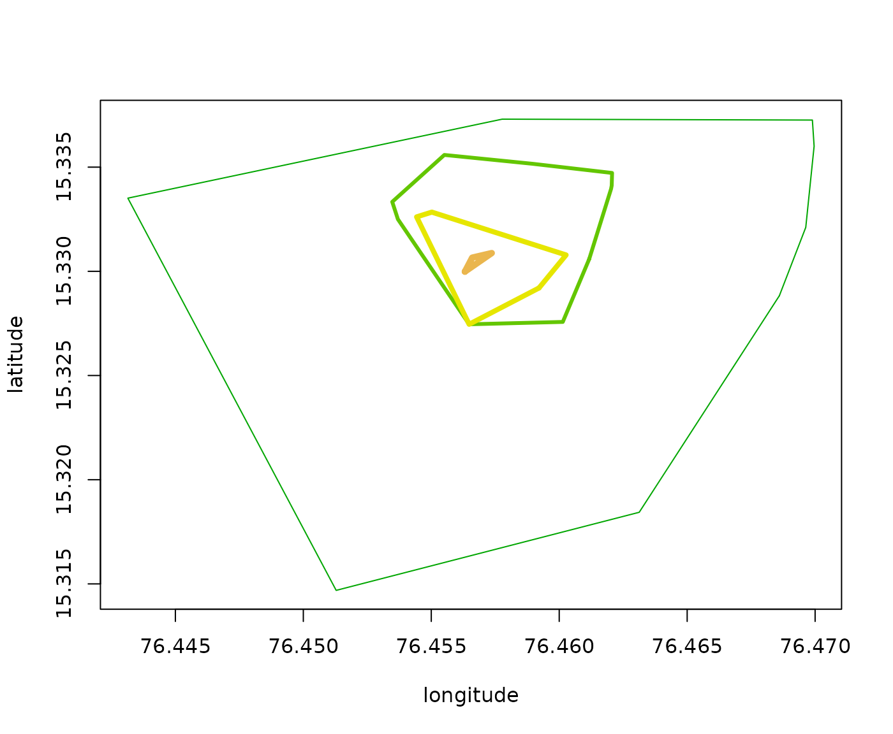
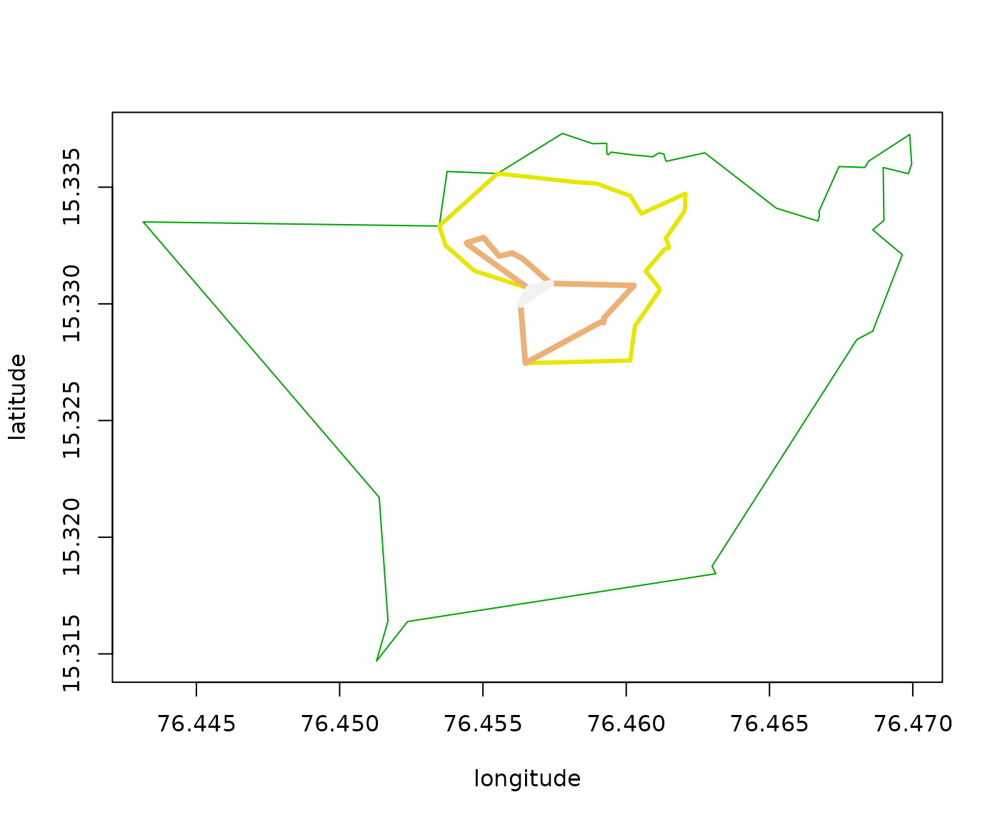
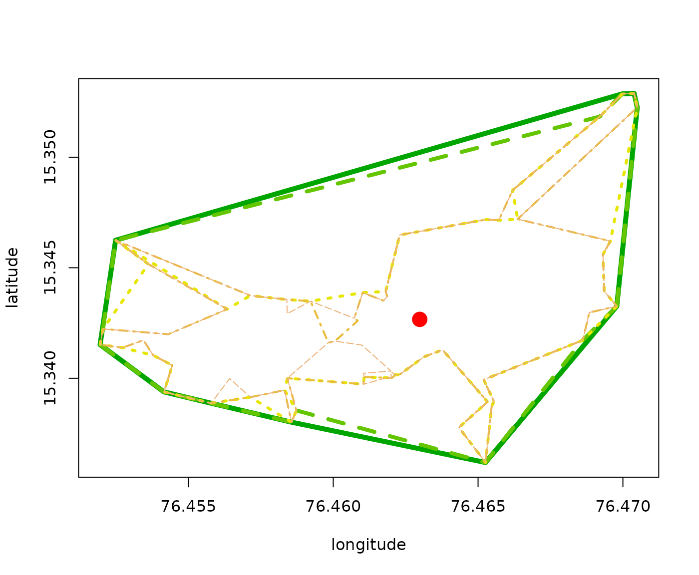

The dodgrpackage includes three functions for
calculating iso-contours from one or more points of origin:
-
dodgr_isodists()for contours of equal distance; -
dodgr_isochrones()for contours of equal time; and -
dodgr_isoverts()to return full set of vertices within defined isodistance or isochrone contours.
Each of these functions is fully vectorised to accept both multiple
origin points and multiple contours. Each returns a single
data.frame object, with a column specifying either the
distance or time limit (as dlim for dodgr_isodists(),
or tlim for dodgr_isochrones()).
The functions are also internally parallelised for efficient
calculation.
Input formats
The dodgr_isodists()
function accepts arbitrary input, either as a generic dodgr
data.frame (with a “distance” column), or as street
networks derived from applying the weight_streetnet()
function to either sf or st objects.
Time-based calculations in dodgr are only possible when
applied to street networks dervied from st objects,
because equivalent sf-based objects can only provide crude
estimates of journey times. The time-specific functions dodgr_isochrones()
and dodgr_isoverts()
thus only accept dodgr street networks derived from
sc data. The following table summarises the requirements of
these functions:
| Function | Input type |
|---|---|
| dodgr_isodists | Either sf or sc format data |
| dodgr_ isochrones | Only sc format data |
| dodgr_isoverts | Only sc format data |
dodgr_isodists
The dodgr_isodists()
function calculates contours of equal distance from one or more points
of origin.
graph <- weight_streetnet (hampi)
from <- sample (graph$from_id, size = 100)
dlim <- c (2, 5, 10, 20) * 100
d <- dodgr_isodists (graph, from = from, dlim)
dim (d)## [1] 2527 5| from | dlim | id | x | y |
|---|---|---|---|---|
| 7793105273 | 200 | 7793105273 | 76.45106 | 15.31341 |
| 7793105273 | 200 | 1376768511 | 76.45128 | 15.31469 |
| 7793105273 | 200 | 7793105273 | 76.45106 | 15.31341 |
| 7793105273 | 500 | 7793105273 | 76.45106 | 15.31341 |
| 7793105273 | 500 | 5351820856 | 76.44991 | 15.31114 |
| 7793105273 | 500 | 2398957682 | 76.45169 | 15.31642 |
This function returns in this case a data.frame with the
columns shown above and 2,527 points defining the isodistance contours
from each origin (from) point, at the specified distances
of 200, 500, 1000, 2000 metres. There are naturally more points defining
the contours at longer distances:
table (d$dlim)##
## 200 500 1000 2000
## 403 561 689 874The points defining the contours are arranged in an anticlockwise order around each point of origin, and so can be directly visualised using base graphics functions. This is easier to see by using just a single point of origin:
set.seed (1)
from <- sample (graph$from_id, size = 1)
dlim <- c (2, 5, 10, 20) * 100
d <- dodgr_isodists (graph, from = from, dlim)
cols <- terrain.colors (length (dlim) + 2) # + 2 to avoid light colours at end of scale.
index <- which (d$dlim == max (d$dlim)) # plot max contour first
plot (
d$x [index], d$y [index], "l",
col = cols [1],
xlab = "longitude", ylab = "latitude"
)
for (i in seq (dlim) [-1]) {
index <- which (d$dlim == rev (dlim) [i])
lines (d$x [index], d$y [index], col = cols [i], lwd = i + 1)
}
The concavity parameter
The default contours are convex hulls. The dodgr_isodists()
and dodgr_isochrones()
functions include an additional concavity parameter to
return generate concave isodistance or isochrone polygons, defaulting to
a value of 0 for no concavity. Changing this value can generate concave
contours like in the following results:
set.seed (1)
from <- sample (graph$from_id, size = 1)
dlim <- c (2, 5, 10, 20) * 100
d <- dodgr_isodists (graph, from = from, dlim, concavity = 0.5)
cols <- terrain.colors (length (dlim))
index <- which (d$dlim == max (d$dlim))
plot (
d$x [index], d$y [index], "l",
col = cols [1],
xlab = "longitude", ylab = "latitude"
)
for (i in seq (dlim) [-1]) {
index <- which (d$dlim == rev (dlim) [i])
lines (d$x [index], d$y [index], col = cols [i], lwd = i + 1)
}
The calculation of isodists or isochrone
values is cached, so different values of the concavity
parameter can be trialled without needing to re-calculate the underlying
values:
set.seed (2)
from <- sample (graph$from_id, size = 1)
dlim <- c (2, 5, 10, 20) * 100
system.time ( # Initial call calculates distances to all points:
d <- dodgr_isodists (graph, from = from, dlim, concavity = 0.5)
)## user system elapsed
## 0.220 0.000 0.221
system.time ( # Subsequent call uses cached values:
d <- dodgr_isodists (graph, from = from, dlim, concavity = 0.75)
)## user system elapsed
## 0.037 0.000 0.036The concavity parameter has a default value of 0 for
strictly convex polygons. Values closer to 1 generate more concave
polygons. The following code demonstrates the effect of increasing
values of this parameter.
set.seed (5)
from <- sample (graph$from_id, size = 1)
dlim <- 2000
concavity <- 0:4 / 4
d <- lapply (concavity, function (i) dodgr_isodists (graph, from = from, dlim, concavity = i))
cols <- terrain.colors (length (d) + 2)
plot (
d [[1]]$x, d [[1]]$y,
type = "l",
col = cols [1], lwd = 5,
xlab = "longitude", ylab = "latitude"
)
for (i in seq_along (d) [-1]) {
lines (
d [[i]]$x, d [[i]]$y,
col = cols [i], lwd = 6 - i, lty = i
)
}
v <- dodgr_vertices (graph)
v_from <- v [match (from, v$id), ]
points (v_from [, c ("x", "y")], pch = 19, col = "red", cex = 2)
dodgr_isochrones
The dodgr_isochrones()
works just like dodgr_isodists()
except that it can only be applied to street networks generated from silicate (SC)
format data. The results differ only from equivalent distance
results in having a column named “tlim” (for “time”) instead of “dlim”
(for “distance”). The concavity parameter functions in
exactly the same way as described above.
dodgr_isoverts
Both the dodgr_isodists()
and dodgr_isochrones()
functions work by estimating distances or times from specified origin
points to all points out to the maximum specified values of
dlim or tlim. A second stage then generates
convex or concave hulls around these points, with the result containing
an ordered sequence of points tracing the contours around these
hulls.
The dodgr_isoverts()
function generates the full underlying set of points without applying
any hull-tracing routines. This resultant points may be used, for
example, to apply some custom hull-tracing routine, or to perform
statistical analyses on the full points enclosed within specified values
of dlim or tlim. The object returned from this
function is identical to those demonstrated above, with a column named
“dlim” if the dlim parameter is specified, or “tlim” if the
tlim parameter is specified. The data.frame
returned from dodgr_isoverts()
will always contain more data, and have more rows, than equivalent
results from dodgr_isodists()
or dodgr_isochrones().
The rows of the data.frame returned from dodgr_isoverts()
are ordered by increasing dlim or tlim values,
but rows for any given value of those parameters are in arbitrary order.
Each successively higher value of either dlim or
tlim includes all points denoted by all lower values. For
example, all values contained within dlim = 200 are all
those with that specified value of dlim plus all
rows with any values of dlim < 200.
The following code demonstrates typical sizes of results from the dodgr_isodists()
and dodgr_isoverts()
functions:
dat <- dodgr_streetnet_sc ("hampi india")
graph <- weight_streetnet (dat, wt_profile = "foot")
set.seed (1)
from <- sample (graph$.vx0, size = 1)
dlim <- c (2, 5, 10, 20) * 100
nrow (dodgr_isodists (graph, from = from, dlim))## [1] 34
nrow (dodgr_isoverts (graph, from = from, dlim))## [1] 145